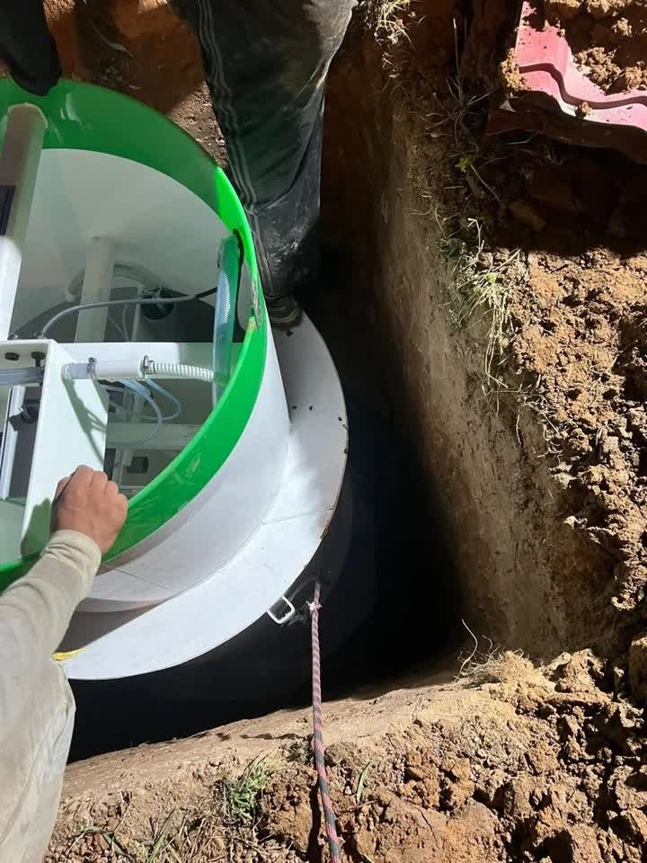
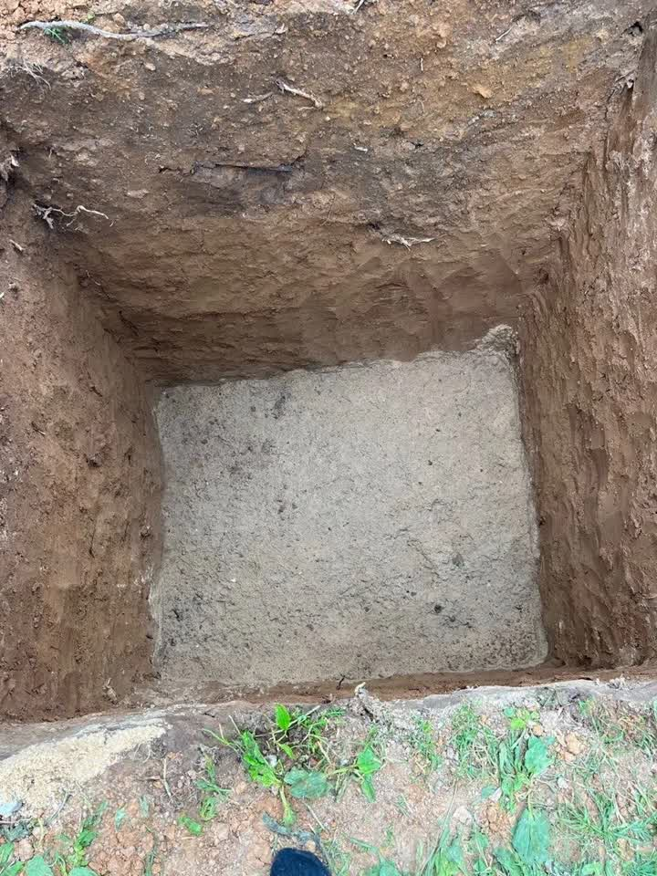
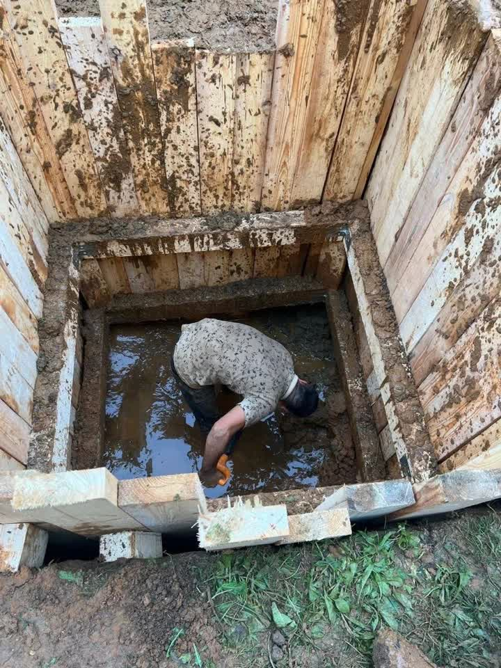
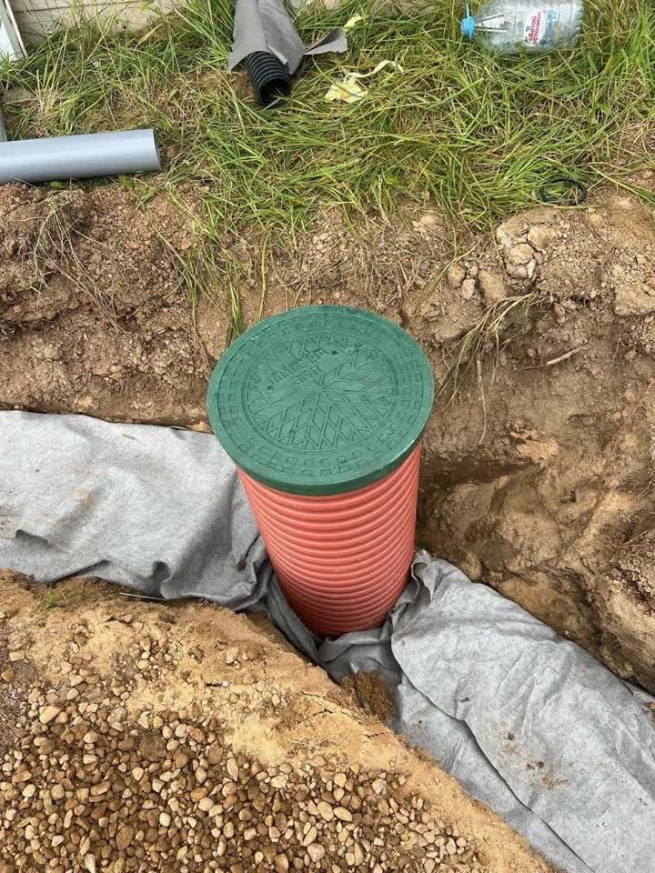

Станции биологической очистки
Работают на бактериях и сжатом воздухе, вода на выходе чистая настолько, что её можно отводить в грунт или канаву. Нужна электророзетка рядом.
СтройИнвест → Септики и канализация
Подбираем станцию под число жильцов и грунт на участке, копаем котлован, ставим корпус, подключаем и запускаем. Работаем круглый год, в том числе на глине и в воде. Москва и Московская область.
Что делаем
Работают на бактериях и сжатом воздухе, вода на выходе чистая настолько, что её можно отводить в грунт или канаву. Нужна электророзетка рядом.
Накопитель или переливной колодец без электричества и автоматики. Для дач с сезонным проживанием и участков, где со светом перебои. Раз в год приезжает ассенизатор.
На пучинистом грунте и при высоких грунтовых водах схема другая: стенки котлована крепим, воду откачиваем, корпус якорим. Без этого весной станцию выдавит наверх.
Заливаем, проверяем все режимы, показываем хозяину, что чистить и как часто. Горловину выводим в уровень грунта, чтобы люк не мешал газонокосилке.
Как проходит работа
Смотрим грунт, уровень воды, место под станцию и куда отводить очищенную воду.
бесплатноСчитаем объём под число жильцов и залповый сброс. Смету показываем до начала работ.
1–2 дняКопаем, готовим песчаное основание, ставим корпус, подключаем вход, выход и вентиляцию.
1–2 дняЗаливаем водой, проверяем работу, выводим горловину, засыпаем и показываем обслуживание.
в день сдачиНаши работы

Станция идёт в котлованОснование готово, корпус ставим без перекоса
Песчаная подушкаРовное основание — корпус не даст усадку на один бок
Крепление стенокНа обводнённом грунте иначе нельзя: осыпется на людей
Горловина с люкомВ уровень грунта: газонокосилка проходит поверхуЧастые вопросы
Если в доме живут постоянно и есть электричество — станция биологической очистки: воду с неё можно отводить в грунт, ассенизатор почти не нужен. Если дом сезонный или со светом перебои — энергонезависимая ёмкость, её просто откачивают раз в год. Разница в цене владения, а не только в покупке, и на замере мы считаем оба варианта.
Работаем и в таких условиях, но схема другая: стенки котлована крепим щитами, воду откачиваем насосом во время монтажа, корпус пригружаем или якорим бетонной плитой. Если поставить станцию как на сухом грунте, весной её выдавит наверх вместе с трубами.
Можно, и мы ставим. Мёрзлый грунт даже удобнее: стенки котлована держатся сами, техника не вязнет, участок не раскисает. Дороже выходит только разработка верхнего мёрзлого слоя. Зимой у монтажников свободнее, поэтому выезд обычно быстрее, чем в мае.
Глина при промерзании расширяется и сдавливает корпус с боков — через сезон станция деформируется или поедет. Песок так не работает. Засыпаем послойно, с проливкой, чтобы не осталось пустот.
Зависит от станции, числа жильцов, грунта и длины трассы до дома. Называем сумму после выезда и до начала работ. Выезд и подбор оборудования бесплатные.
Ещё мы делаем
Заявка на выезд
Отвечаем круглосуточно: звоните в любое время или пишите в мессенджер — ответим там же.